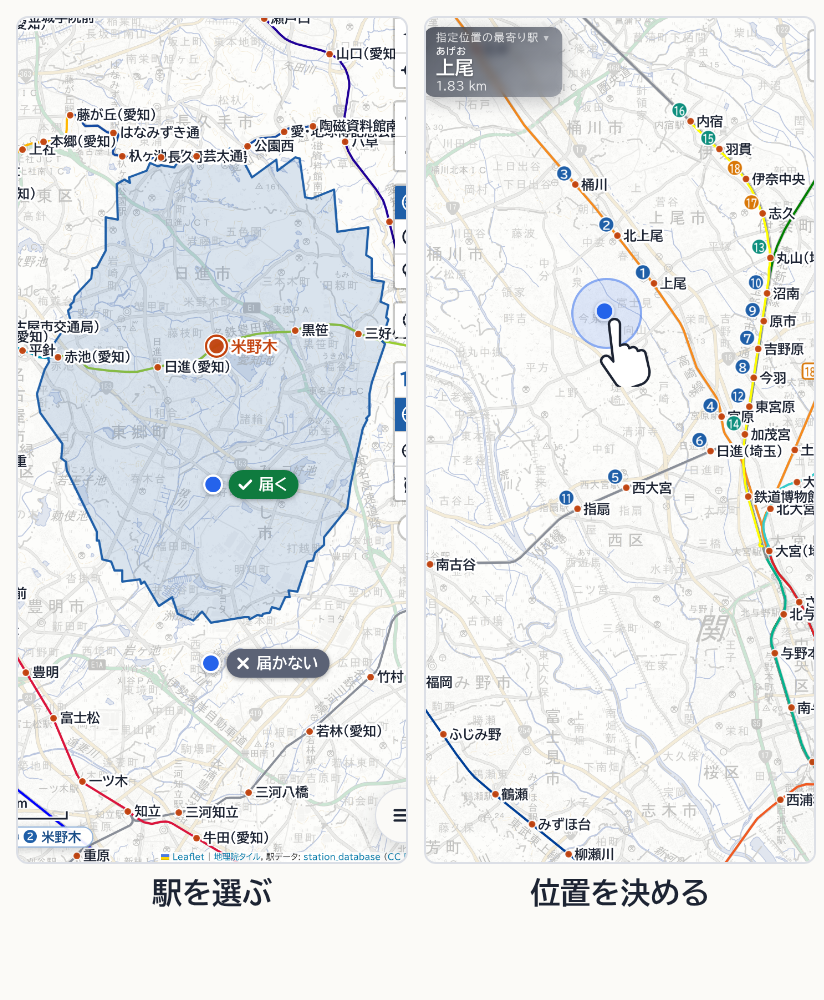
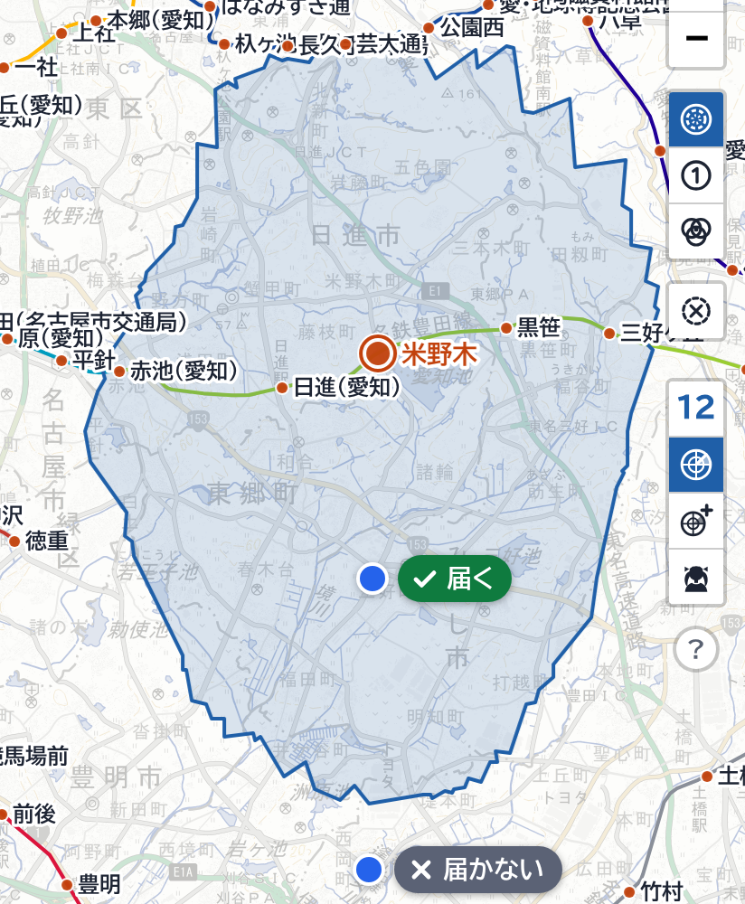
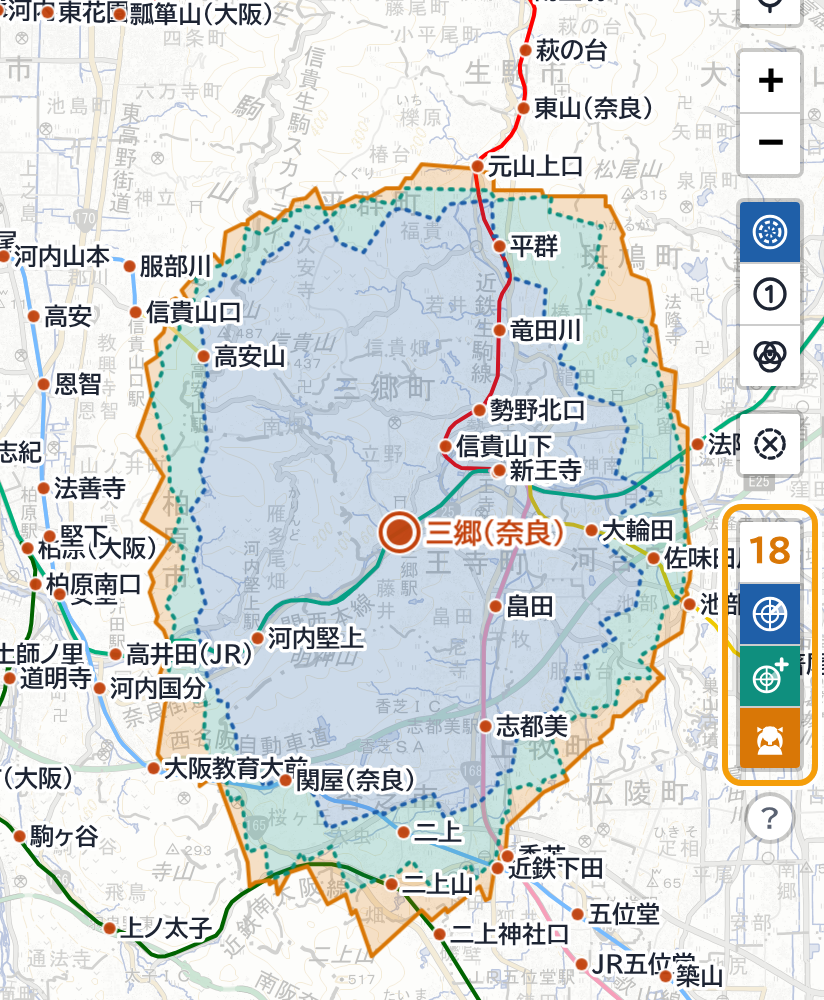
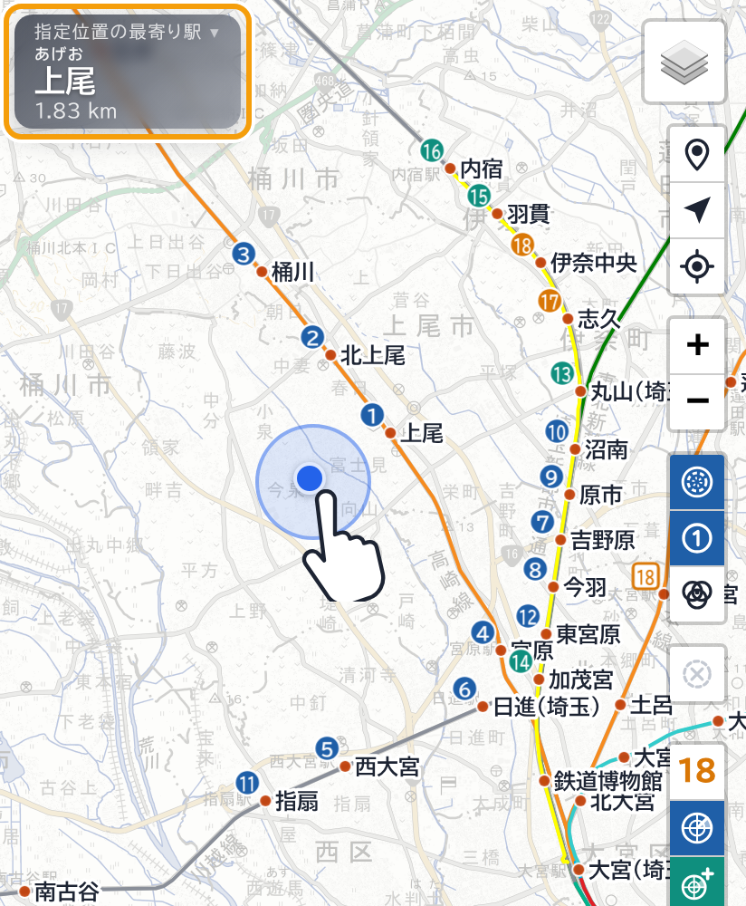
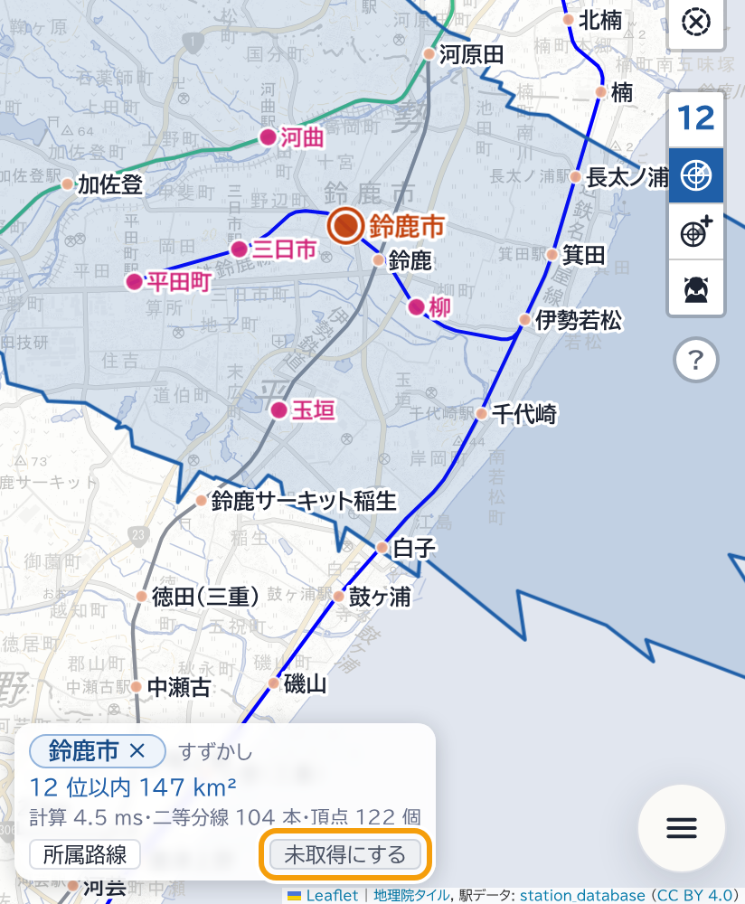
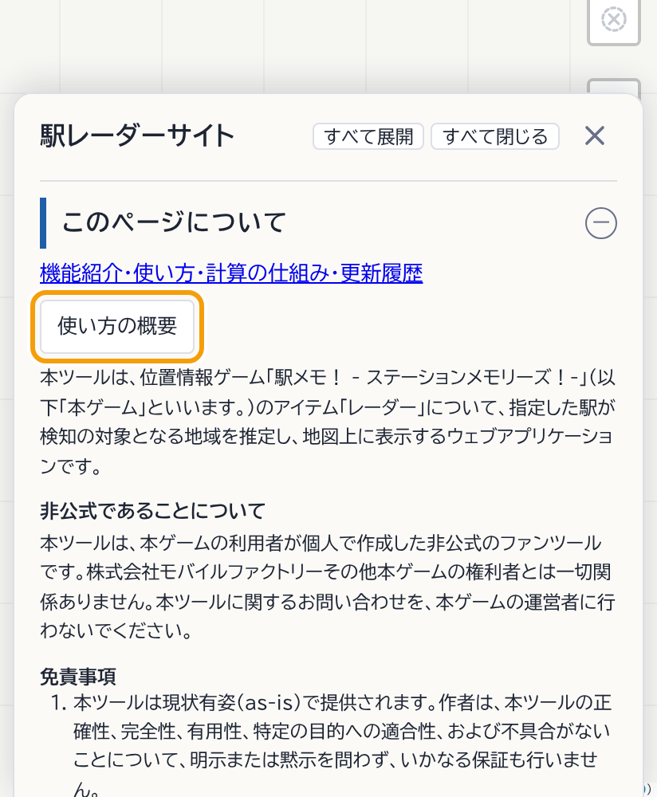

駅レーダーサイトの主な機能と操作を、簡単に説明します。
この概要は、自動では一度だけ表示します。メニューの〈このページについて〉の［使い方の概要］から、もう一度表示できます。

駅メモ！のレーダーで、どこからどの駅にアクセスできるかを地図に表示します。調べ方は 2 通りです。

地図上の駅の点をタップすると、その駅を選択します。塗られたエリアの中にいれば、選んだ駅がレーダーの検知対象に入ります。
エリアは、選んだ駅から届く範囲ではありません。エリアの形と広さは、まわりの駅の配置で決まります。選んだ駅がエリアの中心にあるとは限りません。

青はレーダーの検知数（通常時）、緑はレーダーブースター、橙はなつめのスキルを使用したときに届くエリアです。
右側の枠で囲んだボタンで、レーダー・レーダーブースター・なつめのスキルを計算に含めるかを切り替えます。数のボタンをタップすると、検知数を変更できます。

地図の駅以外の場所を長押し（PC は右クリック）すると、その地点を現在地とみなします（指定位置）。その地点から届く駅を、近い順に番号で表示します。
左上の最寄り駅案内をタップすると、駅順位一覧を表示します。現在地に戻すには、［位置情報を利用する］をオンにします。

メニューの〈未取得駅〉の［管理機能の利用をはじめる］で、はじめるときの取得状況（すべて未取得・すべて取得済み・CSV ファイル）を選びます。
そのあとは、駅を選択して選択駅情報欄の［未取得にする］［取得済みにする］で切り替えます。未取得駅は、地図上で目立つ色で表示します。管理画面では、路線ごとのチェックと CSV ファイルの読み込みができます。

各ボタンと設定の働きは、地図の［？］から開く「使い方」のページで説明しています。
この概要は、メニューの〈このページについて〉の［使い方の概要］から、もう一度表示できます。
はじめるときの取得状況を選んでください。
すべての駅を未取得としてはじめると、地図上のすべての駅を未取得駅の色で強調表示します。色は〈マップ〉の［色の設定］で、強調表示のオン／オフは〈表示〉の［未取得駅を強調表示］で変更できます。
取得状況は自分で登録します。駅メモ！のアプリとは連携せず、データはこの端末の中にだけ保存します。
このページはテスト版です。設定とデータは、公開版とは別に保存されます。
本ツールは、位置情報ゲーム「駅メモ！ - ステーションメモリーズ！-」（以下「本ゲーム」といいます。）のアイテム「レーダー」について、指定した駅が検知の対象となる地域を推定し、地図上に表示するウェブアプリケーションです。
本ツールは、本ゲームの利用者が個人で作成した非公式のファンツールです。株式会社モバイルファクトリーその他本ゲームの権利者とは一切関係ありません。本ツールに関するお問い合わせを、本ゲームの運営者に行わないでください。
本ツールの作成にあたり、先行する次のツールに敬意と感謝を表します。
本ツールは上記のツールとは独立して作成されたものであり、それらのプログラムを使用していません。駅データには、駅レーダーマップと同じく station_database を使用しています。
駅メモ！（株式会社モバイルファクトリー）の非公式ファンツールです。公式とは関係ありません。